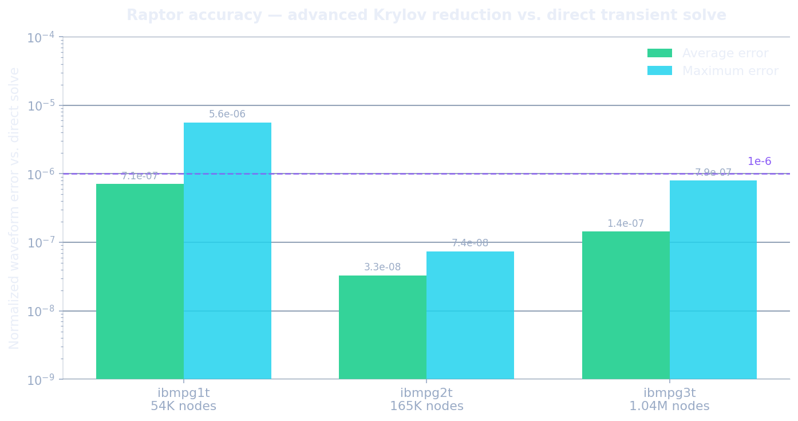
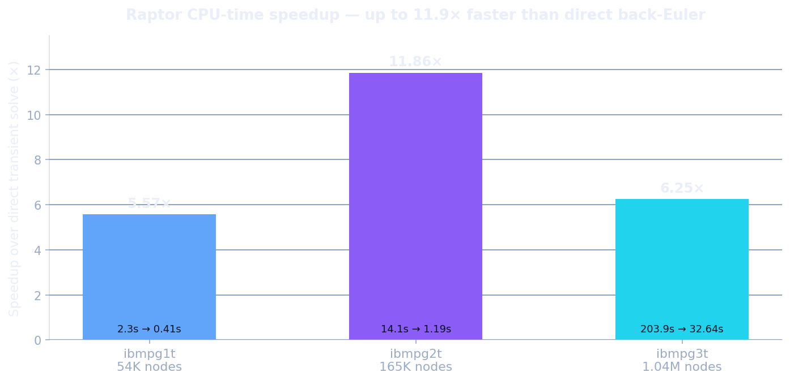
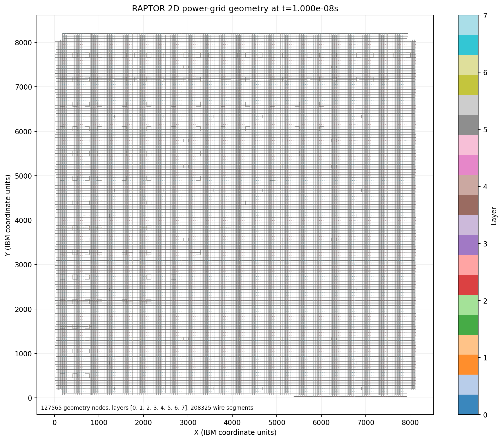
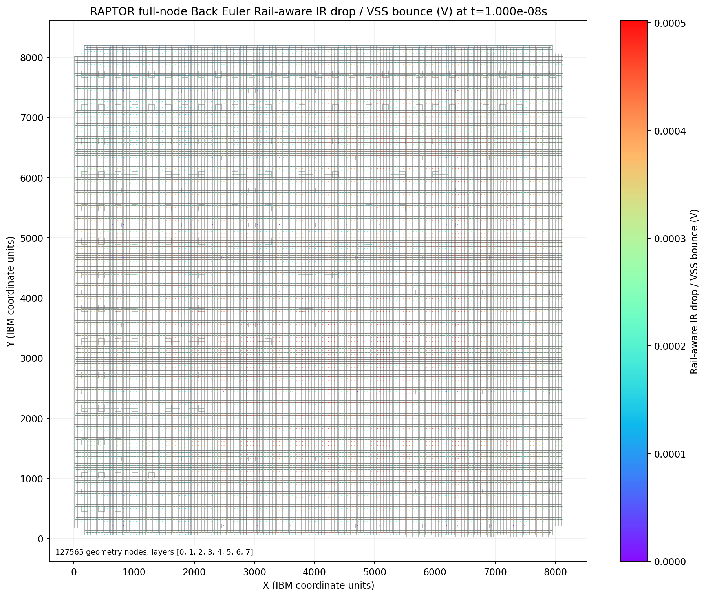
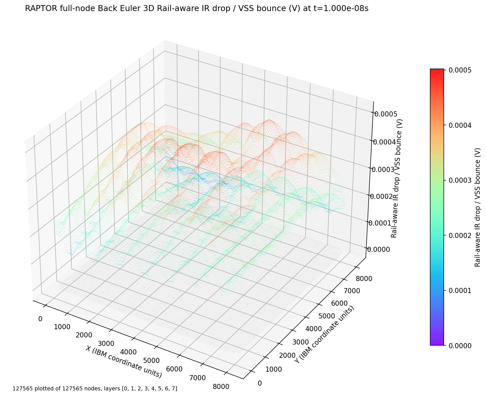
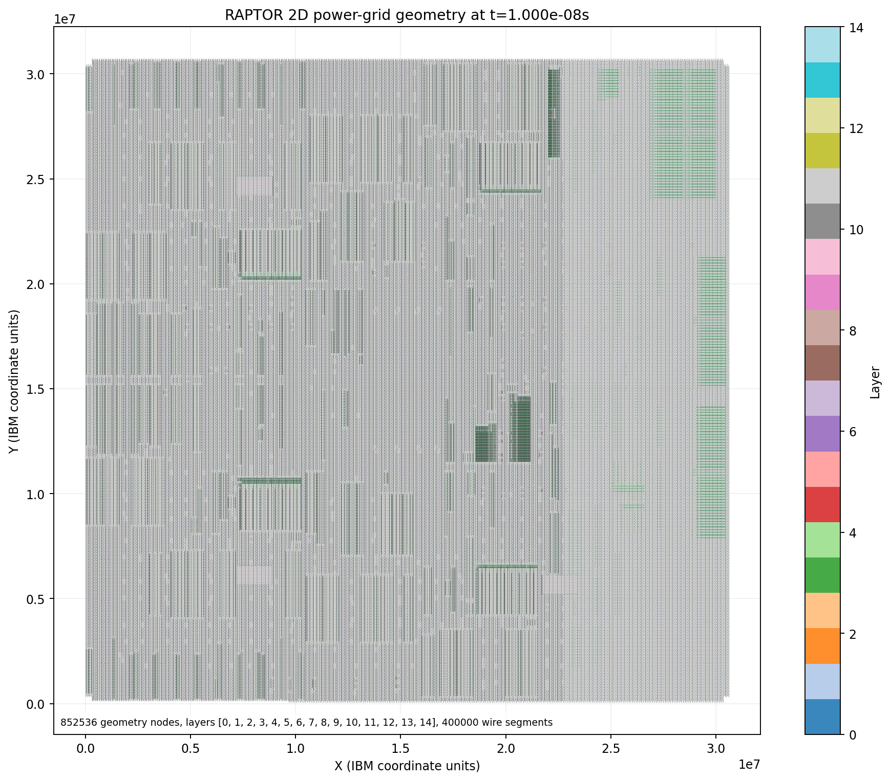
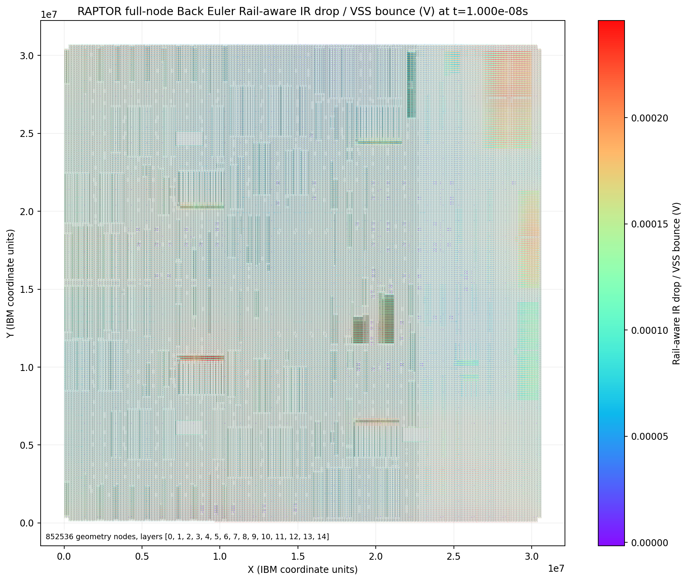
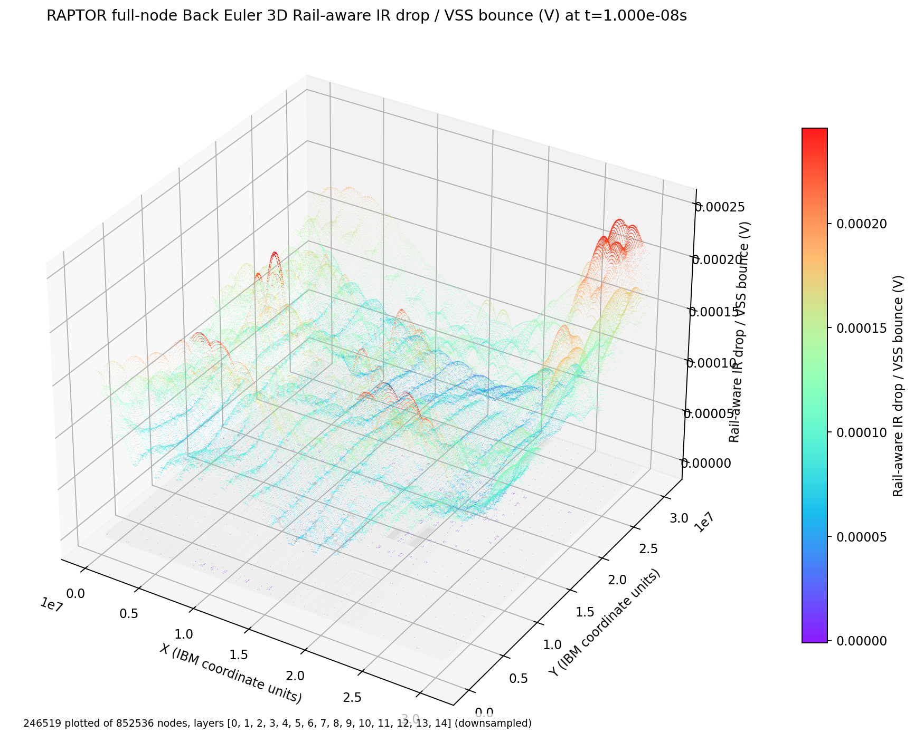

Raptor — Rapid Analysis of Power-grid Transients via Order Reduction — runs full transient power-grid (P/G) simulation on million-node designs in a fraction of the time of a direct solver — with waveforms that match it to machine precision. Sweep power scenarios, close timing, and check dynamic IR-drop where a single full transient run used to be your whole budget.
Dynamic IR-drop is decided by the full time-domain response of a mesh with millions of nodes, thousands of switching current sources, and thousands of time steps. A direct solver re-solves that giant system step after step — accurate, but far too slow to keep in a design loop.
Modern power grids reach millions of RC nodes across many metal layers. Every added node grows the linear system that must be solved at each of thousands of transient time points.
Back-Euler with a sparse factorization is the trusted reference, but it re-solves the full mesh step after step. On the largest IBM grid that's over three minutes for a single run — impossible for the thousands of scenarios sign-off demands.
Floorplanning, decap budgeting, and power delivery all need dynamic-IR feedback per iteration. Without a fast, accurate transient engine, IR-drop gets checked last — when it's most expensive to fix.
Raptor pairs an advanced Krylov subspace reduction solver with a direct back-Euler reference, delivering full transient power-grid waveforms on the very same netlist — fast enough to iterate, accurate enough to sign off. And when one machine isn't enough, a domain decomposition method scales the simulation out across CPU cores and GPUs.
Drive the grid with arbitrary switching-current waveforms and get the complete voltage history at every probe node — dynamic IR-drop, droop, and settling, step by step across thousands of time points.
Advanced Krylov reduction replaces the repeated full-grid solve with a tiny reduced model. Raptor returns the same transient in up to 11.9× less CPU time than a direct back-Euler solver — and the gap grows with grid size.
Reduced waveforms track the direct solver to a maximum normalized error under 6×10⁻⁶ — visually indistinguishable, safe for sign-off. The standard-Krylov mode reaches machine precision (≈10⁻¹⁴).
Validated on the IBM power-grid benchmarks from 54K up to 1.04M nodes, with hundreds of thousands of switching current sources — real, published, industrial-scale meshes.
A rational Krylov subspace captures the grid's dominant dynamics in an order-10 model that reproduces the full response — order-of-magnitude smaller than the original system, with no meaningful loss of fidelity.
Once the reduced model is built, re-running new current scenarios is cheap — ideal for evaluating many power profiles, decap placements, or floorplans, or for a scriptable, closed-loop sign-off flow.
For grids beyond what a single solve should carry, Raptor's domain decomposition method partitions the power grid into balanced subdomains, solves each one independently — in parallel across multi-core CPUs and GPUs — and stitches the solution back together at the shared boundary nodes. The full-grid answer, computed a piece at a time, all at once.
Raptor is designed to plug directly into agentic EDA workflows. A first-class CLI and structured data interface let autonomous design agents invoke fast transient power-grid analysis, consume machine-readable waveforms and IR-drop margins, and feed those results back into floorplanning, power delivery, and decap-budgeting loops.
Transient IR-drop analysis becomes a callable step inside your agentic EDA flow, not a hand-run GUI task.
The speed comes from never re-solving the full mesh. Raptor builds a compact reduced-order model that captures the grid's dominant dynamics with an advanced Krylov subspace reduction method, marches that small model through time, and projects the answer back onto the nodes you asked for. It ships in two modes that span the speed–accuracy tradeoff: Raptor, the advanced rational-Krylov solver (fastest), and the standard Krylov method (most accurate).
The power-grid netlist becomes its conductance and capacitance matrices plus the switching current sources — the same system a direct transient solver would march through step by step.
An advanced Krylov subspace reduction method distills the grid's dominant response into a small basis. Raptor's rational variant places its expansion smartly so a tiny order-10 model captures the full dynamics.
Transient integration runs on the small reduced model instead of the million-node grid — the same time steps, a fraction of the work per step. This is where the speedup comes from.
The reduced solution is projected back to the probe nodes, recovering full voltage waveforms and dynamic IR-drop that match the direct solver to machine-grade accuracy.
Rational Krylov subspace: expansion points chosen for the transient window. The lowest-cost path to full waveforms, still essentially exact.
Standard Krylov subspace reduction: reproduces the direct solver to machine precision, at a moderate but still solid speedup.
A direct transient solver re-solves a system with millions of unknowns at every one of thousands of time steps. Raptor instead builds a reduced model — an order-10 stand-in that behaves like the full grid over the transient window — and marches that tiny model through time. Replacing a million-node solve-per-step with a ten-variable one, then projecting back, is where the speedup comes from — with no meaningful loss of accuracy versus the direct solve.
A direct back-Euler transient solver ships alongside as the ground-truth reference, and every Raptor result is validated against it.
Every number below is benchmarked against a direct back-Euler transient solve on the three IBM power-grid circuits — from 54K to 1.04M nodes — over 1,001 time points, with error measured on 20 golden probe nodes per circuit. Reduction order 10, rational-Krylov shift time 1.0 s.
| Circuit | Avg error | Max error |
|---|---|---|
| ibmpg1t 54K | 7.08e-07 | 5.62e-06 |
| ibmpg2t 165K | 3.30e-08 | 7.39e-08 |
| ibmpg3t 1.04M | 1.43e-07 | 7.94e-07 |
| Circuit | Nodes | Sources | Direct CPU | Krylov CPU | Krylov ↑ | Krylov max err | Raptor CPU | Raptor ↑ | Raptor max err |
|---|---|---|---|---|---|---|---|---|---|
| ibmpg1t | 54,265 | 25,082 | 2.267 | 1.510 | 1.50× | 6.66e-14 | 0.407 | 5.57× | 5.62e-06 |
| ibmpg2t | 164,897 | 37,168 | 14.097 | 2.947 | 4.78× | 1.71e-13 | 1.189 | 11.86× | 7.39e-08 |
| ibmpg3t | 1,043,444 | 202,009 | 203.929 | 54.138 | 3.76× | 1.74e-06 | 32.642 | 6.25× | 7.94e-07 |
| Average | — | — | — | — | 3.35× | — | — | 7.89× | — |


Raptor doesn't just solve the grid — it renders it. For each IBM benchmark, the metal structure, the rail-aware IR-drop / VSS-bounce map, and the same drop lifted into 3D are reconstructed from the full-node back-Euler snapshot at t = 1.0×10⁻⁸ s, straight from the SPICE geometry.






Raptor is in active development. Request access or a walkthrough on your own power-grid designs, and we'll get you set up.